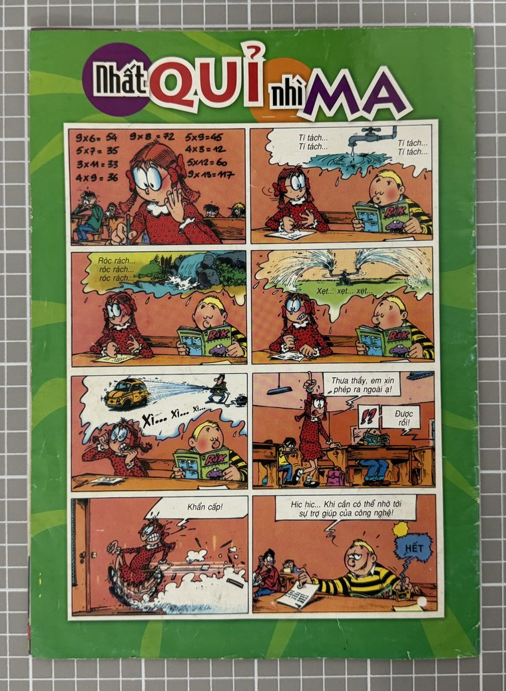
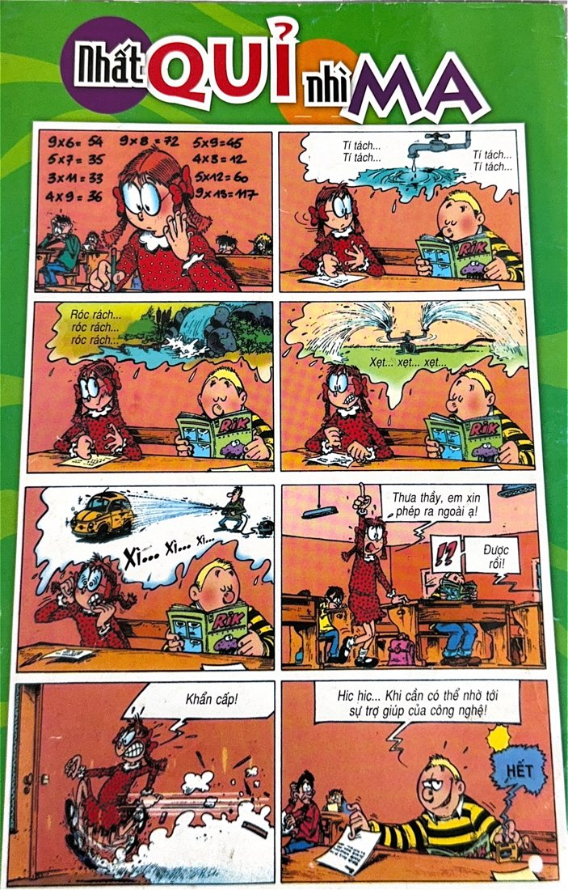

![Pages 16 and 17. Left: a news item about a man who was too large for prison clothes and beds, with a photo of a large man in a black jacket, above a section of funny animal photos: birds on a branch, a squirrel taking a peanut from a hand, and a cat beside a calculator. Right: two readers' photos, one of a potted plant with a sign and one of a man with a rainbow umbrella in a flooded street; a one-panel cartoon; and a song parody titled 'Cùng vui đến trường' with a cartoon of two children. One address is covered by a black box.](img/09-spread-p16-17.jpg)


1. Which scan became the master, and not pressing pages flat
- What we decided
- We used V3, the Apple Notes scan, as our master. We did not press pages flat to force them straight, and when cropping we cut along straight lines, even where that cropped away some of the page edge (mostly plain colour). The back cover is the exception: V3's had glare, so we replaced it with a cleaner photograph from our second set (V2), which is that page's master.
- What we tried first
- We began by testing the softbox setup that Professor Dan kindly set up for us. With it, the lighting was not consistent (it got dimmer towards the top and bottom of the page) and, most importantly, the cover pages had too much glare, which could not be fixed afterwards.
- Why Notes
- Notes has a convenient autoscan feature, which we wanted to test.
- Why we did not press the pages flat
- We wanted to limit any further damage to the copy, as it was old and quite thin.
- What it changed or lost
- The app cropped the pages and balanced the brightness automatically. We found this did not affect the clarity of the image, and we chose this scanning method for our master.
- What we would do with more time
- We would scan the pages much more carefully. Perhaps we would adjust the lighting until it was ideal for each page, instead of relying on the Notes correction.
- Example
- Our Notes scan had glare in the right corner of the back cover, which could not be edited out afterwards. Our V2 photograph, taken under the same lighting but without the Notes app's automatic brightness balancing, did not have it. We straightened that photograph with a four-cornered, straight-edged outline cut just inside the page edge, giving V5 (right). In V4 (centre) the same cover had come out stretched and with a patch of glare.
- The trade-off: one could say the glary version was more true to life, as in bright lighting that could be how it looks.

